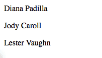

Warning
- This guide assumes basic knowledge of Python
- This guide assumes an installed Odoo
Creating a basic module
In Odoo, tasks are performed by creating modules.
Modules customize the behavior of an Odoo installation, either by adding new behaviors or by altering existing ones (including behaviors added by other modules).
Odoo's scaffolding can setup a basic module. To quickly get started simply invoke:
$ ./odoo.py scaffold Academy my-modules
This will automatically create a my-modules module directory with an
academy module inside. The directory can be an existing module directory
if you want, but the module name must be unique within the directory.
A demonstration module
We have a "complete" module ready for installation.
Although it does absolutely nothing we can install it:
start the Odoo server
$ ./odoo.py --addons-path addons,my-modules- go to http://localhost:8069
- create a new database including demonstration data
- to go
- in the top-right corner remove the Installed filter and search for academy
- click the Install button for the Academy module
To the browser
Controllers interpret browser requests and send data back.
Add a simple controller and ensure it is imported by __init__.py (so
Odoo can find it):
# -*- coding: utf-8 -*-
from openerp import http
class Academy(http.Controller):
@http.route('/academy/academy/', auth='public')
def index(self, **kw):
return "Hello, world"
# @http.route('/academy/academy/objects/', auth='public')
# def list(self, **kw):
Shut down your server (^C) then restart it:
$ ./odoo.py --addons-path addons,my-modules
and open a page to http://localhost:8069/academy/academy/, you should see your "page" appear:
Templates
Generating HTML in Python isn't very pleasant.
The usual solution is templates, pseudo-documents with placeholders and display logic. Odoo allows any Python templating system, but provides its own QWeb templating system which integrates with other features.
Create a template and ensure the template file is registered in the
__openerp__.py manifest, and alter the controller to use our template:
class Academy(http.Controller):
@http.route('/academy/academy/', auth='public')
def index(self, **kw):
return http.request.render('academy.index', {
'teachers': ["Diana Padilla", "Jody Caroll", "Lester Vaughn"],
})
# @http.route('/academy/academy/objects/', auth='public')
# def list(self, **kw):
<openerp>
<data>
<template id="index">
<title>Academy</title>
<t t-foreach="teachers" t-as="teacher">
<p><t t-esc="teacher"/></p>
</t>
</template>
<!-- <template id="object"> -->
<!-- <h1><t t-esc="object.display_name"/></h1> -->
<!-- <dl> -->
The templates iterates (t-foreach) on all the teachers (passed through the
template context), and prints each teacher in its own paragraph.
Finally restart Odoo and update the module's data (to install the template) by going to and clicking Upgrade.
Tip
Alternatively, Odoo can be restarted and update modules at
the same time:
$ odoo.py --addons-path addons,my-modules -d academy -u academy
Going to http://localhost:8069/academy/academy/ should now result in:
Storing data in Odoo
Odoo models map to database tables.
In the previous section we just displayed a list of string entered statically in the Python code. This doesn't allow modifications or persistent storage so we'll now move our data to the database.
Defining the data model
Define a teacher model, and ensure it is imported from __init__.py so it
is correctly loaded:
from openerp import models, fields, api
class Teachers(models.Model):
_name = 'academy.teachers'
name = fields.Char()
Then setup basic access control for the model and add them to the manifest:
# always loaded
'data': [
'security/ir.model.access.csv',
'templates.xml',
],
# only loaded in demonstration mode
id,name,model_id:id,group_id:id,perm_read,perm_write,perm_create,perm_unlink
access_academy_teachers,access_academy_teachers,model_academy_teachers,,1,0,0,0
this simply gives read access (perm_read) to all users (group_id:id
left empty).
Note
Data files (XML or CSV) must be added to the
module manifest, Python files (models or controllers) don't but have to
be imported from __init__.py (directly or indirectly)
Warning
the administrator user bypasses access control, they have access to all models even if not given access
Demonstration data
The second step is to add some demonstration data to the system so it's
possible to test it easily. This is done by adding a demo
data file, which must be linked from the manifest:
<openerp>
<data>
<record id="padilla" model="academy.teachers">
<field name="name">Diana Padilla</field>
</record>
<record id="carroll" model="academy.teachers">
<field name="name">Jody Carroll</field>
</record>
<record id="vaughn" model="academy.teachers">
<field name="name">Lester Vaughn</field>
</record>
</data>
</openerp>
Tip
Data files can be used for demo and non-demo data. Demo data are only loaded in "demonstration mode" and can be used for flow testing and demonstration, non-demo data are always loaded and used as initial system setup.
In this case we're using demonstration data because an actual user of the system would want to input or import their own teachers list, this list is only useful for testing.
Accessing the data
The last step is to alter model and template to use our demonstration data:
- fetch the records from the database instead of having a static list
- Because
search()returns a set of records matching the filter ("all records" here), alter the template to print each teacher'sname
class Academy(http.Controller):
@http.route('/academy/academy/', auth='public')
def index(self, **kw):
Teachers = http.request.env['academy.teachers']
return http.request.render('academy.index', {
'teachers': Teachers.search([])
})
# @http.route('/academy/academy/objects/', auth='public')
<template id="index">
<title>Academy</title>
<t t-foreach="teachers" t-as="teacher">
<p><t t-esc="teacher.id"/> <t t-esc="teacher.name"/></p>
</t>
</template>
<!-- <template id="object"> -->
Restart the server and update the module (in order to update the manifest and templates and load the demo file) then navigate to http://localhost:8069/academy/academy/. The page should look slightly different: names should simply be prefixed by a number (the database identifier for the teacher).
Website support
Odoo bundles a module dedicated to building websites.
So far we've used controllers fairly directly, but Odoo 8 added deeper
integration and a few other services (e.g. default styling, theming) via the
website module.
- first, add
websiteas a dependency toacademy - then add the
website=Trueflag on the controller, this sets up a few new variables on the request object and allows using the website layout in our template - use the website layout in the template
'version': '0.1',
# any module necessary for this one to work correctly
'depends': ['website'],
# always loaded
'data': [
from openerp import http
class Academy(http.Controller):
@http.route('/academy/academy/', auth='public', website=True)
def index(self, **kw):
Teachers = http.request.env['academy.teachers']
return http.request.render('academy.index', {
<openerp>
<data>
<template id="index">
<t t-call="website.layout">
<t t-set="title">Academy</t>
<div class="oe_structure">
<div class="container">
<t t-foreach="teachers" t-as="teacher">
<p><t t-esc="teacher.id"/> <t t-esc="teacher.name"/></p>
</t>
</div>
</div>
</t>
</template>
<!-- <template id="object"> -->
After restarting the server while updating the module (in order to update the manifest and template) access http://localhost:8069/academy/academy/ should yield a nicer looking page with branding and a number of built-in page elements (top-level menu, footer, …)
The website layout also provides support for edition tools: click
Sign In (in the top-right), fill the credentials in (admin /
admin by default) then click Log In.
You're now in Odoo "proper": the administrative interface. For now click on the Website menu item (top-left corner.
We're back in the website but as an administrator, with access to advanced edition features provided by the website support:
- a template code editor () where you can see and edit all templates used for the current page
- the Edit button in the top-left switches to "edition mode" where blocks (snippets) and rich text edition are available
- a number of other features such as mobile preview or SEO
URLs and routing
Controller methods are associated with routes via the
route() decorator which takes a routing string and a
number of attributes to customise its behavior or security.
We've seen a "literal" routing string, which matches a URL section exactly, but routing strings can also use converter patterns which match bits of URLs and make those available as local variables. For instance we can create a new controller method which takes a bit of URL and prints it out:
'teachers': Teachers.search([])
})
@http.route('/academy/<name>/', auth='public', website=True)
def teacher(self, name):
return '<h1>{}</h1>'.format(name)
# @http.route('/academy/academy/objects/', auth='public')
# def list(self, **kw):
# return http.request.render('academy.listing', {
restart Odoo, access http://localhost:8069/academy/Alice/ and http://localhost:8069/academy/Bob/ and see the difference.
As the name indicates, converter patterns don't just do extraction, they also do validation and conversion, so we can change the new controller to only accept integers:
'teachers': Teachers.search([])
})
@http.route('/academy/<int:id>/', auth='public', website=True)
def teacher(self, id):
return '<h1>{} ({})</h1>'.format(id, type(id).__name__)
# @http.route('/academy/academy/objects/', auth='public')
Restart Odoo, access http://localhost:8069/academy/2, note how the old value was a string, but the new one was converted to an integers. Try accessing http://localhost:8069/academy/Carol/ and note that the page was not found: since "Carol" is not an integer, the route was ignored and no route could be found.
Odoo provides an additional converter called model which provides records
directly when given their id. Let's use this to create a generic page for
teacher biographies:
'teachers': Teachers.search([])
})
@http.route('/academy/<model("academy.teachers"):teacher>/', auth='public', website=True)
def teacher(self, teacher):
return http.request.render('academy.biography', {
'person': teacher
})
# @http.route('/academy/academy/objects/', auth='public')
</div>
</t>
</template>
<template id="biography">
<t t-call="website.layout">
<t t-set="title">Academy</t>
<div class="oe_structure"/>
<div class="oe_structure">
<div class="container">
<p><t t-esc="person.id"/> <t t-esc="person.name"/></p>
</div>
</div>
<div class="oe_structure"/>
</t>
</template>
<!-- <template id="object"> -->
<!-- <h1><t t-esc="object.display_name"/></h1> -->
<!-- <dl> -->
then change the list of model to link to our new controller:
<div class="oe_structure">
<div class="container">
<t t-foreach="teachers" t-as="teacher">
<p><a t-attf-href="/academy/{{ slug(teacher) }}">
<t t-esc="teacher.name"/></a>
</p>
</t>
</div>
</div>
<div class="oe_structure"/>
<div class="oe_structure">
<div class="container">
<h3><t t-esc="person.name"/></h3>
</div>
</div>
<div class="oe_structure"/>
Restart Odoo and upgrade the module, then you can visit each teacher's page. As an exercise, try adding blocks to a teacher's page to write a biography, then go to another teacher's page and so forth. You will discover, that your biography is shared between all teachers, because blocks are added to the template, and the biography template is shared between all teachers, when one page is edited they're all edited at the same time.
Field edition
Data which is specific to a record should be saved on that record, so let us add a new biography field to our teachers:
_name = 'academy.teachers'
name = fields.Char()
biography = fields.Html()
<div class="oe_structure">
<div class="container">
<h3><t t-esc="person.name"/></h3>
<div><t t-esc="person.biography"/></div>
</div>
</div>
<div class="oe_structure"/>
Restart Odoo and update the views, reload the teacher's page and… the field is invisible since it contains nothing.
For record fields, templates can use a special t-field directive which
allows editing the field content from the website using field-specific
interfaces. Change the person template to use t-field:
<div class="oe_structure"/>
<div class="oe_structure">
<div class="container">
<h3 t-field="person.name"/>
<div t-field="person.biography"/>
</div>
</div>
<div class="oe_structure"/>
Restart Odoo and upgrade the module, there is now a placeholder under the
teacher's name and a new zone for blocks in Edit mode. Content
dropped there is stored in the corresponding teacher's biography field, and
thus specific to that teacher.
The teacher's name is also editable, and when saved the change is visible on the index page.
t-field can also take formatting options which depend on the exact field.
For instance if we display the modification date for a teacher's record:
<div class="oe_structure">
<div class="container">
<h3 t-field="person.name"/>
<p>Last modified: <i t-field="person.write_date"/></p>
<div t-field="person.biography"/>
</div>
</div>
it is displayed in a very "computery" manner and hard to read, but we could ask for a human-readable version:
<div class="oe_structure">
<div class="container">
<h3 t-field="person.name"/>
<p>Last modified: <i t-field="person.write_date" t-field-options='{"format": "long"}'/></p>
<div t-field="person.biography"/>
</div>
</div>
or a relative display:
<div class="oe_structure">
<div class="container">
<h3 t-field="person.name"/>
<p>Last modified: <i t-field="person.write_date" t-field-options='{"widget": "relative"}'/></p>
<div t-field="person.biography"/>
</div>
</div>
Administration and ERP integration
A brief and incomplete introduction to the Odoo administration
The Odoo administration was briefly seen during the website support section. We can go back to it using in the menu (or Sign In if you're signed out).
The conceptual structure of the Odoo backend is simple:
- first are menus, a tree (menus can have sub-menus) of records. Menus without children map to…
- actions. Actions have various types: links, reports, code which Odoo should execute or data display. Data display actions are called window actions, and tell Odoo to display a given model according to a set of views…
- a view has a type, a broad category to which it corresponds (a list, a graph, a calendar) and an architecture which customises the way the model is displayed inside the view.
Editing in the Odoo administration
By default, an Odoo model is essentially invisible to a user. To make it visible it must be available through an action, which itself needs to be reachable, generally through a menu.
Let's create a menu for our model:
'data': [
'security/ir.model.access.csv',
'templates.xml',
'views.xml',
],
# only loaded in demonstration mode
'demo': [
<openerp>
<data>
<record id="action_academy_teachers" model="ir.actions.act_window">
<field name="name">Academy teachers</field>
<field name="res_model">academy.teachers</field>
</record>
<menuitem sequence="0" id="menu_academy" name="Academy"/>
<menuitem id="menu_academy_content" parent="menu_academy"
name="Academy Content"/>
<menuitem id="menu_academy_content_teachers"
parent="menu_academy_content"
action="action_academy_teachers"/>
then accessing http://localhost:8069/web/ in the top left should be a menu Academy, which is selected by default, as it is the first menu, and having opened a listing of teachers. From the listing it is possible to Create new teacher records, and to switch to the "form" by-record view.
If there is no definition of how to present records (a
view) Odoo will automatically create a basic one
on-the-fly. In our case it works for the "list" view for now (only displays
the teacher's name) but in the "form" view the HTML biography field is
displayed side-by-side with the name field and not given enough space.
Let's define a custom form view to make viewing and editing teacher records
a better experience:
<field name="name">Academy teachers</field>
<field name="res_model">academy.teachers</field>
</record>
<record id="academy_teacher_form" model="ir.ui.view">
<field name="name">Academy teachers: form</field>
<field name="model">academy.teachers</field>
<field name="arch" type="xml">
<form>
<sheet>
<label for="name"/> <field name="name"/>
<label for="biography"/>
<field name="biography"/>
</sheet>
</form>
</field>
</record>
<menuitem sequence="0" id="menu_academy" name="Academy"/>
<menuitem id="menu_academy_content" parent="menu_academy"
Relations between models
We have seen a pair of "basic" fields stored directly in the record. There are a number of basic fields. The second broad categories of fields are relational and used to link records to one another (within a model or across models).
For demonstration, let's create a courses model. Each course should have a
teacher field, linking to a single teacher record, but each teacher can
teach many courses:
name = fields.Char()
biography = fields.Html()
class Courses(models.Model):
_name = 'academy.courses'
name = fields.Char()
teacher_id = fields.Many2one('academy.teachers', string="Teacher")
id,name,model_id:id,group_id:id,perm_read,perm_write,perm_create,perm_unlink
access_academy_teachers,access_academy_teachers,model_academy_teachers,,1,0,0,0
access_academy_courses,access_academy_courses,model_academy_courses,,1,0,0,0
let's also add views so we can see and edit a course's teacher:
</form>
</field>
</record>
<record id="action_academy_courses" model="ir.actions.act_window">
<field name="name">Academy courses</field>
<field name="res_model">academy.courses</field>
</record>
<record id="academy_course_search" model="ir.ui.view">
<field name="name">Academy courses: search</field>
<field name="model">academy.courses</field>
<field name="arch" type="xml">
<search>
<field name="name"/>
<field name="teacher_id"/>
</search>
</field>
</record>
<record id="academy_course_list" model="ir.ui.view">
<field name="name">Academy courses: list</field>
<field name="model">academy.courses</field>
<field name="arch" type="xml">
<tree string="Courses">
<field name="name"/>
<field name="teacher_id"/>
</tree>
</field>
</record>
<record id="academy_course_form" model="ir.ui.view">
<field name="name">Academy courses: form</field>
<field name="model">academy.courses</field>
<field name="arch" type="xml">
<form>
<sheet>
<label for="name"/>
<field name="name"/>
<label for="teacher_id"/>
<field name="teacher_id"/>
</sheet>
</form>
</field>
</record>
<menuitem sequence="0" id="menu_academy" name="Academy"/>
<menuitem id="menu_academy_content" parent="menu_academy"
name="Academy Content"/>
<menuitem id="menu_academy_content_courses"
parent="menu_academy_content"
action="action_academy_courses"/>
<menuitem id="menu_academy_content_teachers"
parent="menu_academy_content"
It should also be possible to create new courses directly from a teacher's
page, or to see all the courses they teach, so add
the inverse relationship to the teachers
model:
name = fields.Char()
biography = fields.Html()
course_ids = fields.One2many('academy.courses', 'teacher_id', string="Courses")
class Courses(models.Model):
_name = 'academy.courses'
<field name="arch" type="xml">
<form>
<sheet>
<label for="name"/> <field name="name"/>
<label for="biography"/>
<field name="biography"/>
<field name="course_ids">
<tree string="Courses" editable="bottom">
<field name="name"/>
</tree>
</field>
</sheet>
</form>
Discussions and notifications
Odoo provides technical models, which don't directly fulfill business needs but which add capabilities to business objects without having to build them by hand.
One of these is the Chatter system, part of Odoo's email and messaging
system, which can add notifications and discussion threads to any model.
The model simply has to _inherit
mail.thread, and add the message_ids field to its form view to display
the discussion thread. Discussion threads are per-record.
For our academy, it makes sense to allow discussing courses to handle e.g. scheduling changes or discussions between teachers and assistants:
class Courses(models.Model):
_name = 'academy.courses'
_inherit = 'mail.thread'
name = fields.Char()
teacher_id = fields.Many2one('academy.teachers', string="Teacher")
<field name="name"/>
<label for="teacher_id"/>
<field name="teacher_id"/>
</sheet>
<div class="oe_chatter">
<field name="message_follower_ids" widget="mail_followers"/>
<field name="message_ids" widget="mail_thread"/>
</div>
</form>
</field>
At the bottom of each course form, there is now a discussion thread and the possibility for users of the system to leave messages and follow or unfollow discussions linked to specific courses.
Selling courses
Odoo also provides business models which allow using or opting in business
needs more directly. For instance the website_sale module sets up an
e-commerce site based on the products in the Odoo system. We can easily make
course subscriptions sellable by making our courses specific kinds of
products.
Rather than the previous classical inheritance, this means replacing our course model by the product model, and extending products in-place (to add anything we need to it).
First of all we need to add a dependency on website_sale so we get both
products (via sale) and the ecommerce interface:
'version': '0.1',
# any module necessary for this one to work correctly
'depends': ['website_sale'],
# always loaded
'data': [
restart Odoo, update your module, there is now a Shop section in the website, listing a number of pre-filled (via demonstration data) products.
The second step is to replace the courses model by product.template,
and add a new category of product for courses:
'security/ir.model.access.csv',
'templates.xml',
'views.xml',
'data.xml',
],
# only loaded in demonstration mode
'demo': [
<openerp><data>
<record model="product.public.category" id="category_courses">
<field name="name">Courses</field>
<field name="parent_id" ref="website_sale.categ_others"/>
</record>
</data></openerp>
<record id="vaughn" model="academy.teachers">
<field name="name">Lester Vaughn</field>
</record>
<record id="course0" model="product.template">
<field name="name">Course 0</field>
<field name="teacher_id" ref="padilla"/>
<field name="public_categ_ids" eval="[(4, ref('academy.category_courses'), False)]"/>
<field name="website_published">True</field>
<field name="list_price" type="float">0</field>
<field name="type">service</field>
</record>
<record id="course1" model="product.template">
<field name="name">Course 1</field>
<field name="teacher_id" ref="padilla"/>
<field name="public_categ_ids" eval="[(4, ref('academy.category_courses'), False)]"/>
<field name="website_published">True</field>
<field name="list_price" type="float">0</field>
<field name="type">service</field>
</record>
<record id="course2" model="product.template">
<field name="name">Course 2</field>
<field name="teacher_id" ref="vaughn"/>
<field name="public_categ_ids" eval="[(4, ref('academy.category_courses'), False)]"/>
<field name="website_published">True</field>
<field name="list_price" type="float">0</field>
<field name="type">service</field>
</record>
</data>
</openerp>
name = fields.Char()
biography = fields.Html()
course_ids = fields.One2many('product.template', 'teacher_id', string="Courses")
class Courses(models.Model):
_inherit = 'product.template'
teacher_id = fields.Many2one('academy.teachers', string="Teacher")
id,name,model_id:id,group_id:id,perm_read,perm_write,perm_create,perm_unlink
access_academy_teachers,access_academy_teachers,model_academy_teachers,,1,0,0,0
</form>
</field>
</record>
<menuitem sequence="0" id="menu_academy" name="Academy"/>
<menuitem id="menu_academy_content" parent="menu_academy"
name="Academy Content"/>
<menuitem id="menu_academy_content_teachers"
parent="menu_academy_content"
With this installed, a few courses are now available in the Shop, though they may have to be looked for.
Altering existing views
So far, we have briefly seen:
- the creation of new models
- the creation of new views
- the creation of new records
- the alteration of existing models
We're left with the alteration of existing records and the alteration of existing views. We'll do both on the Shop pages.
View alteration is done by creating extension views, which are applied on top of the original view and alter it. These alteration views can be added or removed without modifying the original, making it easier to try things out and roll changes back.
Since our courses are free, there is no reason to display their price on the shop page, so we're going to alter the view and hide the price if it's 0. The first task is finding out which view displays the price, this can be done via which lets us read the various templates involved in rendering a page. Going through a few of them, "Product item" looks a likely culprit.
Altering view architectures is done in 3 steps:
- Create a new view
- Extend the view to modify by setting the new view's
inherit_idto the modified view's external id - In the architecture, use the
xpathtag to select and alter elements from the modified view
<div class="oe_structure"/>
</t>
</template>
<template id="product_item_hide_no_price" inherit_id="website_sale.products_item">
<xpath expr="//div[hasclass('product_price')]/b" position="attributes">
<attribute name="t-if">product.price > 0</attribute>
</xpath>
</template>
<!-- <template id="object"> -->
<!-- <h1><t t-esc="object.display_name"/></h1> -->
<!-- <dl> -->
The second thing we will change is making the product categories sidebar visible by default: lets you toggle a tree of product categories (used to filter the main display) on and off.
This is done via the customize_show and active fields of extension
templates: an extension template (such as the one we've just created) can be
customize_show=True. This choice will display the view in the Customize
menu with a check box, allowing administrators to activate or disable them
(and easily customize their website pages).
We simply need to modify the Product Categories record and set its default to active="True":
</xpath>
</template>
<record id="website_sale.products_categories" model="ir.ui.view">
<field name="active" eval="True"/>
</record>
<!-- <template id="object"> -->
<!-- <h1><t t-esc="object.display_name"/></h1> -->
<!-- <dl> -->
With this, the Product Categories sidebar will automatically be enabled when the Academy module is installed.